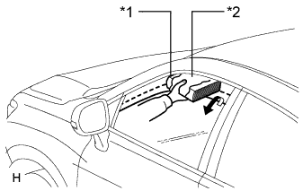

POWER WINDOW CONTROL SYSTEM > OPERATION CHECK |
| CHECK WINDOW LOCK SWITCH |
When the window lock switch of the multiplex network master switch assembly is pushed in, the LED on the switch will illuminate. Check that the power window switch operation indicators for all of switches other than those on the multiplex network master switch are off and that the front passenger and rear windows are disabled.
When the window lock switch is pushed in again, the LED on the switch will go off. Check that all of the power window switch operation indicators illuminate and that the front passenger and rear windows can be operated normally.
| CHECK MANUAL UP / DOWN FUNCTION |
Check that the driver side power window operates as follows:
| Condition | Master Switch | Switch Operation | Power Window |
| Engine switch on (IG) | Driver side | Pulled halfway up | UP (Closes) |
| Pushed halfway down | DOWN (Opens) |
Check that the front passenger side window and rear power windows operate as follows:
| Condition | Regulator Switch | Switch Operation | Power Window |
| Front passenger side | Pulled halfway up | UP (Closes) |
| Pushed halfway down | DOWN (Opens) | ||
| Rear LH side | Pulled halfway up | UP (Closes) | |
| Pushed halfway down | DOWN (Opens) | ||
| Rear RH side | Pulled halfway up | UP (Closes) | |
| Pushed halfway down | DOWN (Opens) |
| CHECK AUTO UP / DOWN FUNCTION |
Check that the driver side power window operates as follows:
| Condition | Master Switch | Switch Operation | Power Window |
| Engine switch on (IG) | Driver side | Pulled up (One touch operation) | AUTO UP (Closes) |
| Pushed down (One touch operation) | AUTO DOWN (Opens) |
Check that the front passenger side window and rear power windows operate as follows:
| Condition | Regulator Switch | Switch Operation | Power Window |
| Front passenger side | Pulled up (One touch operation) | AUTO UP (Closes) |
| Pushed down (One touch operation) | AUTO DOWN (Opens) | ||
| Rear LH side | Pulled up (One touch operation) | AUTO UP (Closes) | |
| Pushed down (One touch operation) | AUTO DOWN (Opens) | ||
| Rear RH side | Pulled up (One touch operation) | AUTO UP (Closes) | |
| Pushed down (One touch operation) | AUTO DOWN (Opens) |
| CHECK REMOTE MANUAL UP / DOWN FUNCTION |
Check that the front passenger side window and rear power windows operate as follows:
| Condition | Master Switch | Switch Operation | Power Window |
| Engine switch on (IG) | Front passenger side | Pulled halfway up | UP (Closes) |
| Pushed halfway down | DOWN (Opens) | ||
| Rear LH side | Pulled halfway up | UP (Closes) | |
| Pushed halfway down | DOWN (Opens) | ||
| Rear RH side | Pulled halfway up | UP (Closes) | |
| Pushed halfway down | DOWN (Opens) |
| CHECK REMOTE AUTO UP / DOWN FUNCTION |
Check that the front passenger side window and rear power windows operate as follows:
| Condition | Master Switch | Switch Operation | Power Window |
| Engine switch on (IG) | Front passenger side | Pulled up (One touch operation) | AUTO UP (Closes) |
| Pushed down (One touch operation) | AUTO DOWN (Opens) | ||
| Rear LH side | Pulled up (One touch operation) | AUTO UP (Closes) | |
| Pushed down (One touch operation) | AUTO DOWN (Opens) | ||
| Rear RH side | Pulled up (One touch operation) | AUTO UP (Closes) | |
| Pushed down (One touch operation) | AUTO DOWN (Opens) |
| CHECK POWER WINDOW OPERATION FUNCTION AFTER ENGINE SWITCH IS TURNED OFF |
Check that all the power windows can be operated with the multiplex network master switch and power window regulator switch (for front passenger side, rear LH and RH sides) after the engine switch is turned off.
Check that the key-off operation function does not operate after the driver side door or front passenger side door is opened.
Check that all the power windows cannot be operated after more than approximately 43 seconds have elapsed since the engine switch was turned off.
| CHECK KEY-LINKED OPEN AND CLOSE FUNCTION |
Check that all power windows operate as follows:
| Condition | Door Key Cylinder Operation | Power Window |
| No key is inside vehicle and all doors are closed | Held in lock position for more than 2 seconds | Up (Closes) |
| No key is inside vehicle and all doors are closed | Returned to neutral position | Stop |
| No key is inside vehicle and all doors are closed | Held in unlock position for more than 2 seconds | Down (Opens) |
| No key is inside vehicle and all doors are closed | Returned to neutral position | Stop |
| CHECK WIRELESS TRANSMITTER-LINKED OPEN AND CLOSE FUNCTION |
Check that all power windows operate as follows when operating the transmitter:
| Condition | Transmitter Operation | Power Window |
| No key is inside vehicle, and all doors are closed and locked | UNLOCK switch pressed for more than 3.0 seconds | Down (Opens) |
| No key is inside vehicle, and all doors are closed and locked | UNLOCK switch released | Stops |
| No key is inside vehicle, and all doors are closed and locked | LOCK switch pressed for more than 3.0 seconds | Up (Closes) |
| No key is inside vehicle, and all doors are closed and locked | LOCK switch released | Stops |
| CHECK JAM PROTECTION FUNCTION |
Check the basic function.
Fully open the window.
|  |
Set a thick book wrapped with a piece of cloth near the window fully closed position.
| *1 | Thick Book |
| *2 | Cloth |
Operate the auto up or manual up function to check that the power window goes down after the book is caught between the window and door frame, and stops when the opening reaches approximately 200 mm (7.87 in.).
While the power window is moving down, check that the door glass cannot be raised when the power window switch is used.
| CHECK POWER WINDOW SWITCH LED ILLUMINATION |
Check the LED illumination (multiplex network master switch).
Check that the LEDs located on the multiplex network master switch illuminate when the engine switch is turned on (IG).
Check the LED illumination (power window regulator switch [for front passenger side]).
Check that the LED located on the power window regulator switch (for front passenger side) illuminates when the engine switch is turned on (IG).
Check the LED illumination (power window regulator switch [for rear LH and rear RH]).
Check that the LED located on each power window regulator switch (for rear LH and rear RH) illuminates when the engine switch is turned on (IG).